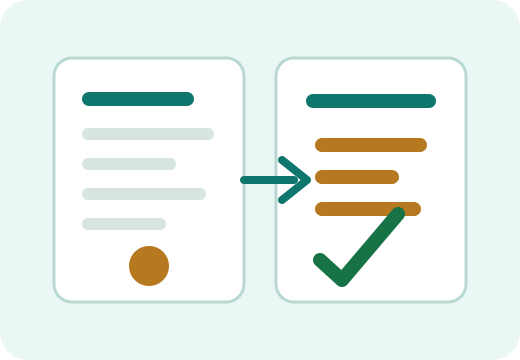

Topic 42
Prompt checklist اور practice
ہر اہم prompt بھیجنے سے پہلے یہ checklist دیکھیں۔

Prompt checklist
- کیا مقصد واضح ہے؟
- کیا ضروری context شامل ہے؟
- کیا audience یا user level بتایا گیا ہے؟
- کیا output کا format بتایا گیا ہے؟
- کیا tone واضح ہے؟
- کیا لمبائی یا حدود لکھی گئی ہیں؟
- کیا sensitive معلومات remove کی گئی ہیں؟
- کیا جواب verify کرنے کا plan ہے؟
Master template
میرا مقصد: [یہاں مقصد لکھیں] Audience: [کس کے لیے جواب چاہیے] Context: [ضروری پس منظر] Task: [AI کو کیا کرنا ہے] Format: [bullets/table/steps/email/checklist] Tone: [آسان/رسمی/دوستانہ/مختصر] حدود: [لمبائی، زبان، کیا شامل نہ ہو] Quality check: جواب practical، واضح اور قابل عمل ہو۔ اگر کوئی بات uncertain ہو تو warning دیں۔
Practice tasks
- اپنی روزمرہ email کو بہتر بنانے کا prompt لکھیں۔
- ایک student کے لیے study plan بنانے کا prompt لکھیں۔
- اپنے کاروبار کے لیے 5 marketing ideas کا prompt لکھیں۔
- کسی مشکل topic کو آسان اردو میں سمجھانے کا prompt لکھیں۔
- AI کے جواب کو verify کرنے کے لیے follow-up prompt لکھیں۔
آخری یاد دہانی
- اچھا prompt واضح، مکمل اور مقصد کے مطابق ہوتا ہے۔
- AI سے بہتر جواب لینے کے لیے context، format اور tone بہت اہم ہیں۔
- Prompt لکھنا ایک skill ہے، practice سے بہتر ہوتی ہے۔
- AI output کو blindly قبول نہ کریں۔